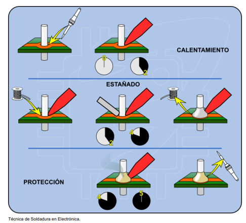

Técnica para realizar una correcta soldadura
Objetivo de aprendizaje: Adquirir una comprensión sólida de los conceptos fundamentales relacionados con las herramientas, materiales y técnicas de soldadura, para aplicar eficazmente estos conocimientos al momento de soldar componentes electrónicos.
- La técnica para realizar una correcta soldadura se resume en tres pasos:
- Calentar con el soldador los elementos a soldar.
- Aplicar estaño en su justa medida.
- No retirar el soldador hasta que el estaño se extienda.

Aunque al principio pueda parecer complicado o uno sienta que nunca podrá dominar esta técnica, con unos metros de cable de estaño, placas viejas, un soldador de calidad media y la paciencia para practicar repetidamente, cualquier persona puede aprender a soldar componentes electrónicos sin dificultad, con el tiempo y la práctica, es posible dominar esta habilidad por completo.
(SENA, nd)
- Técnica para realizar una correcta desoldadura :
- Técnicas avanzadas soldadura y desoldadura :
A continuación, una serie de tres videos en los que Eugenio Nieto nos enseña técnicas más avanzadas de soldadura y desoldadura de componentes electrónicos, incluso de componentes SMD sin usar ningún tipo de herramienta especial, sólo un soldador básico y estaño:
- Técnica desoldadura reutilizable : Ahora un video con tres sencillas técnicas para desoldar componentes electrónicos que deseemos reutilizar.
- Método limpiesa: Es fundamental mantener siempre limpia la punta del soldador, ya que esto es clave para lograr soldaduras duraderas y con un acabado brillante.
(TallerElectronica.com, 2016)